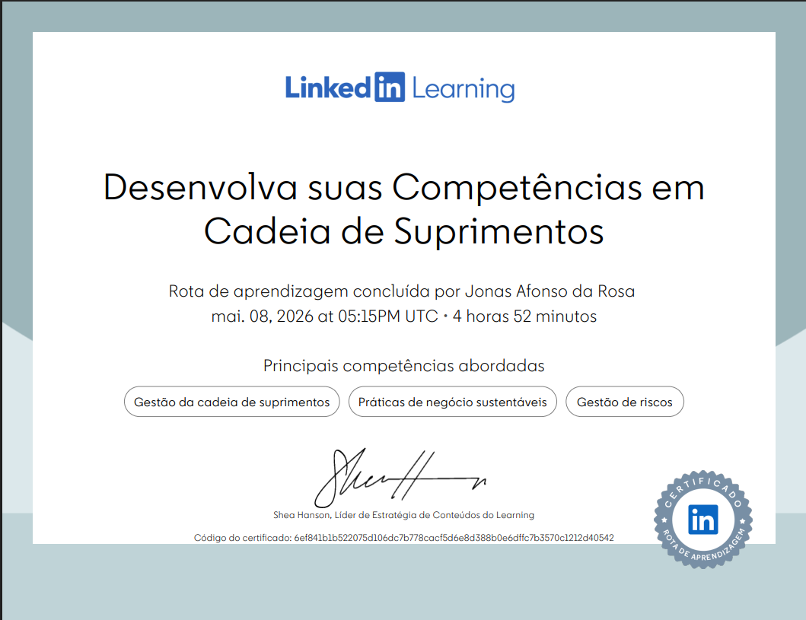

Dashboard Analítico de Carreira
Multiplicador de Conhecimento & Gestão de Qualidade
Responsável pela formação e treinamento de equipes operacionais, dominando o ciclo completo da cadeia: WMS, Paletização, Carregamento, Cubagem e Expedição. Foco total na padronização de processos para garantir a máxima eficiência da operação e o cumprimento rigoroso dos padrões de qualidade nas entregas.
Principais Conquistas & Impacto na Operação
Melhoria nas rotinas de cubagem e organização de carga, maximizando o espaço nos veículos e gerando economia direta nos custos de frete.
Implementação e fiscalização rigorosa das normas de segurança do trabalho e uso de EPIs, mitigando o risco de acidentes no armazém.
Mediação ativa de conflitos e aumento do engajamento da equipe, garantindo uma operação fluida e coesa mesmo sob alta pressão diária.
Utilização de conhecimentos em TI e análise de dados para identificar gargalos operacionais antes da expedição, garantindo altos níveis de SLA.
Experiência Profissional (Foco em Resultados)
Supervisão direta das atividades operacionais estratégicas. Liderança de equipe com foco no fluxo diário de cargas. Implementação de táticas que reduziram gargalos no pátio e garantiram a integridade dos processos. Gestão de fluxo diário de +6 caminhões de coleta e 3 a 5 carretas de transferência
Atuação em cenários de alta complexidade e extremo risco. Desenvolvimento agudo de resiliência, tomada rápida de decisão sob estresse e coordenação logística em ambientes com recursos limitados.
- • Liderança direta de equipe com 12 colaboradores.
- • Treinamento Técnico: Formação de novos colaboradores nas rotinas de WMS, cubagem e paletização, com impacto direto na diminuição de avarias.
- • Garantia de SLA e integridade da carga através da supervisão ativa durante as cargas e descargas.
Suporte crítico aos processos de expedição, otimizando o fluxo de documentação e garantindo aderência aos prazos de entrega (SLA).
Qualificações & Educação
Direcionamento acadêmico prático para a otimização de sistemas WMS/ERP, automação de processos, IoT e análise de dados aplicados à Supply Chain.
